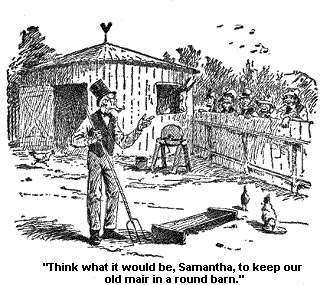
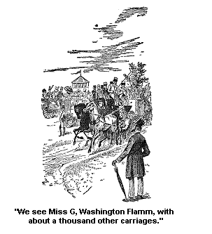
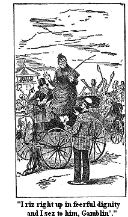
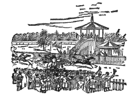

A DRIVE TO SARATOGA LAKE.
Josiah and me took a short drive this afternoon, he hirin' a buggy for the occasion. He called it "goin' in his own conveniance," and I didn't say nothin' aginst his callin' it so. I didn't break it up for this reasun, thinkses I it is a conveniance for us to ride in it, for us 2 tried and true souls to get off for a minute by ourselves.
Wall, Josiah wuz dretful good behaved this afternoon. He helped me in a good deal politer than usual and tucked the bright lap-robe almost tenderly round my form.
Men do have sech spells. They are dretful good actin' at times. Why they act better and more subdueder and mellerer at sometimes than at others, is a deep subject which we mortals cannot as yet fully understand. Also visey versey, their cross, up headeder times, over bearin' and actin'. It is a deep subject and one freighted with a great deal of freight.
But Josiah's goodness on this afternoon almost reached the Scripteral and he sez, when we first sot out, and I see that the horse's head wuz turned towards the Lake. Sez he, "I guess we'll go to the Lake, but where do you want to go, Samantha? I will go anywhere you want to go."
And he still drove almost recklessly on lakewards. And sez he, "We had better go straight on, but say the word, and you can go jest where you want to." And he urged the horse on to still greater speed. And he sez agin, "Do you want to go any particular place, Samantha?"
"Yes," sez I, "I had jest as leves go there as not."
"Wall, I knew there would be where you would want to go." And he drove on at a good jog. But no better jog than we had been a goin' on.
Wall the weather wuz delightful. It wuz soft and balmy. And my feelin's towered my pardner (owin' to his linement) wuz soft and balmy as the air. And so we moved onwards, past the home of one who wuz true to his country, when all round him wuz false, who governed his state wisely and well, held the lines firm, when she wuz balky, and would have been glad to take the lines in her teeth and run away onto ruin; past the big grand house of him who carried a piece of our American justice way off into Egypt and carried it firm and square too right there in the dark. I s'pose it is dark. I have always hearn about its bein' as dark as Egypt. Wall, anyway he is a good lookin' man. They both on 'em are and Josiah admitted it - after some words.
Wall anon, or perhaps a little after, we came to where we could see the face of Beautiful Saratoga Lake, layin' a smilin' up into the skies. A little white cloud wuz a restin' up on the top of the tree-covered mountain that riz up on one side of the lake, and I felt that it might be the shadow form of the sacred dove Saderrosseros a broodin' down over the waters she loved.
That she loved still, though another race wuz a bathin' their weary forwards in the tide. And I wondered as I looked down on it, whether the great heart of the water wuz constant; if it ever heaved up into deep sithes a thinkin' of the one who had passed away, of them who once rested lightly on her bosem, bathed their dark forwards and read the meanin' of the heavens, in the moon and stars reflected there.
I don't know as she remembered 'em, and Josiah don't. But I know as we stood there, a lookin' down on her, the lake seemed to give a sort of a sithe and a shiver kind a run over her, not a cold shiver exactly, but a sort of a shinin', glorified shiver. I see it a comin' from way out on the lake and it swept and sort a shivered on clean to the shore and melted away there at our feet. Mebby it wuz a sort o' sithe, and mebby agin it wuzn't.
I guess it felt that it wuz all right, that a fairer race had brought fairer customs and habits of thoughts, and the change wuz not a bad one. I guess she looked forward to the time when a still grander race should look down into her shinin' face, a race of free men, and free wimmen; sons and daughters of God, who should hold their birthright so grandly and nobly that they will look back upon the people of to-day, as we look back upon the dark sons and daughters of the forest, in pity and dolor.
I guess she thought it wuz all right. Any way she acted as if she did. She looked real sort o' serene and calm as we left her, and sort o' prophetic too, and glowin'.
Wall, we went by a long first rate lookin' sort of a tarven, I guess. It wuz a kind of a dark red color, and dretfully flowered off in wood - red wood. And there we see standin' near the house, a great big round sort of a buildin', and my Josiah sez,
"There! that is a buildin' I like the looks on. That is a barn I like; built perfectly round. That is sunthin' uneek. I'll have a barn like that if I live. I fairly love that barn." And he stopped the horse stun still to look at it.
And I sez in sort o' cool tones, not entirely cold, but coolish: "What under the sun do you want with a round barn? And you don't need another one."
"Wall, I don't exactly need it, Samantha, but it would be a comfert to me to own one. I should dearly love a round barn."
And he went on pensively, - "I wonder how much it would cost. I wouldn't have it quite so big as this is. I'd have it for a horse barn, Samantha. It would look so fashionable, and genteel. Think what it would be, Samantha, to keep our old mair in a round barn, why the mair would renew her age."

"She wouldn't pay no attention to it," sez I. "She knows too much." And I added in cooler, more dignifieder tones, but dretful meanin' ones, "The old mair, Josiah Allen, don't run after every new fancy she hears on. She don't try to be fashionable, and she haint high-headed, except," sez I, reasenably, "when you check her up too much."
"Wall," sez he, "I am bound to make some enquiries. Hello!" says he to a bystander a comin' by. "Have you any idee what such a barn as that would cost? A little smaller one, I don't need so big a one. How many feet of lumber do you s'pose it would take for it? I ask you," sez he, "as between man and man."
I nudged him there, for as I have said, I didn't believe then, and I don't believe now, that he or any other man ever knew or mistrusted what they meant by that term "as between man and man." I think it sounds kind o' flat, and I always oppose Josiah's usin' it; he loves it.
Wall, the man broke out a' laughin' and sez he, "That haint a barn, that is a tree."
"A tree!" sez I, a sort o' cranin' my neck forward in deep amaze. And what exclamation Josiah Allen made, I will not be coaxed into revealin'; no, it is better not.
But suffice it to say that after a long explanation my companion at last gin in that the man wuz a tellin' the truth, and it wuz the lower part of a tree-trunk, that growed once near the Yo Semity valley of California. Good land! good land!
Josiah drove on quick after the man explained it, he felt meachin', but I didn't notice his linement so much, I wuz so deep in thought, and a wonderin' about it; a wonderin' how the old tree felt with her feet a restin' here on strange soil - her withered, dry old feet a standin' here, as if jest ready to walk away restless like and feverish, a wantin' to get back by the rushin' river that used to bathe them feet in the spring overflow of the pure cold mountain water. It seemed to me she felt she was a alien, as if she missed her strong sturdy grand old body, her lofty head that used to peer up over the mountains, and as if some day she wuz a goin' to set off a walkin' back, a tryin' to find 'em.
I thought of how it had towered up, how the sun had kissed its branches, how the birds had sung and built their nests against her green heart, hovered in her great, outstretched arms. The birds of a century, the birds of a thousand years. How the storms had beat upon her; the first autumn rains of a thousand years, the first snow-flakes that had wavered down in a slantin' line and touched the tips of her outstretched fingers, and then had drifted about her till her heart wuz almost frozen and she would clap her cold hands together to warm 'em, and wail out a dretful moanin' sound of desolation, and pain.
But the first warm rain drops of Spring would come, the sunshine warmed her, she swung out her grand arms in triumph agin, and joined the majestic psalm of victory and rejoicing with all her grand sisterhood of psalmists. The stars looked down on her, the sun lit her lofty forward, the suns and stars of a thousand years. Strange animals, that mebby we don't know anything about now, roamed about her feet, birds of a different plumage and song sung to her (mebby).
Strange faces of men and women looked up to her. What faces had looked up to her in sorrow and in joy? I'd gin a good deal to know. I'd have loved to see them strange faces touched with strange pains and hopes. Tribulations and joys of a thousand years ago. What sort of tribulations wuz they, and what sort of joys? Sunthin' human, sunthin' that we hold in common, no doubt. The same pain that pained Eve as she walked down out of Eden, the same joy that Adam enjoyed while they and the garden wuz prosperus, wuz in their faces most probable whether their forwards wuz pinted or broad, their faces black, copper colored or white.
And the changes, the changes of a thousand years, all these the old tree had seen, and I respected her dry dusty old feet and wuz sorry for 'em. And I reveryed on the subject more'n half the way home, and couldn't help it. Anyway my revery lasted till jest before we got to the big gate of the Race Course.
And right there, right in front of them big ornamental doors, we see Miss G. Washington Flamm, with about a thousand other carriages and wagons and Tally ho's and etcetry, and etcetry. Josiah thinks there wuz a million teams, but I don't. I am mejum; there wuzn't probable over a thousand right there in the road.

Miss Flamm recognized us and asked us if we didn't want to go in. Wall, Josiah wuz agreeable to the idee and said so. And then she said sunthin' to the man that tended to the gate, probably sunthin' in our praise, and handed him sunthin', it might have been a ten cent piece, for all I know.
But anyway he wuz dretful polite to us, and let us through. And my land! if it wuzn't a sight to behold! Of all the big roomy places I ever see all filled with vehicles of all shapes and sizes and folks on foot and big high platforms, all filled with men and wimmen and children! And Josiah sez to me, "I thought the hull dumb world wuz there outside in the road, and here there is ten times as many in here."
And I sez, "Yes, Josiah, be careful and not lose me, for I feel like a needle in a hay mow."
He looked down on me and sort a smiled. I s'pose it wuz because I compared myself to a needle, and he sez, "A cambric needle, or a darnin' needle?"
And I sez, "I wouldn't laugh in such a time as this, Josiah Allen." Sez I, "Do jest look over there on the race course."
And it wuz a thrillin' seen. It wuz a place big enough for all the horses of our land to run 'round in and from Phario's horses down to them of the present time. And beautiful broad smooth roads cut in the green velvet of the grass, and horses goin' 'round jest like lightnin', with little light buggys hitched to 'em, some like the quiver on sheet lightnin' (only different shape) and men a drivin' 'em.
And then there wuz a broad beautiful race course with little clusters of trees and bushes, every little while right in the road, and if you'll believe it, I don't s'pose you will, but it is the livin' truth, when them horses, goin' jest like a flash of light, with little boys all dressed in gay colors a ridin' 'em -- when them horses came to them trees instid of goin' 'round 'em, or pushin' in between 'em, or goin' back agin, they jumped right over 'em. I don't spose this will be believed by lots of folks in Jonesville and Loontown, but it is the truth, for I see it with both my eyes. Josiah riz right up in the buggy and cheered jest as the rest of 'em did, entirely unbeknown to himself, so he said, to see it a goin' on.
Why he got nearly rampant with excitement. And so did I, though I wouldn't want it known by Tirzah Ann's husband's folks and others in Jonesville. They call it "steeple chasin'" so if they should hear on't, it wouldn't sound so very wicked any way. I should probable tell 'em if they said too much, "That it wuz a pity if folks couldn't get interested in a steeple and chase it up." But between you and me I didn't see no sign of a steeple, nor meetin' house nor nuthin'. I s'pose they gin it that name to make it seem more righter to perfessors. I know it wuz a great comfort to me. (But I don't think they chased a steeple, and Josiah don't, for we think we should have seen it if they had.)
Wall, as I say, we wuz both dretfully interested, excited, and wrought up, I s'pose I ort to say, when a chap accosted me and says to me sunthin' about buyin' a pool. And I shook my head and sez, "No, I don't want to buy no pool."
But he kep' on a talkin' and a urgin', and sez, "Won't you buy a French pool, mom, you can make lots of money out of it."
"A pool," sez I in dignified axents, and some stern, for I wuz weary with his importunities. "What do I want a pool for? Don't you s'pose there's any pools in Jonesville, and I never thought nothin' on 'em, I always preferred runnin' water. But if I wuz a goin' to buy one, what under the sun do you s'pose I would buy one way off here for, hundreds of miles from Jonesville?"
"I might possibly," sez I, not wantin' to hurt his feelin's and tryin' to think of some use I could put it tot " might if you had a good small American pool, that wuz a sellin' cheap; and I could have it set right in our back yard, clost to the horse barn, why I might possibly try to make a dicker with you for it. I might use it for raisin' ducks and geese, though I'd rather have a runnin' stream then. But how under the sun you think I could take a pool home on a tower, how I could pack it, or transport it, or drive it home is a mystery to me."
Again he sez mechinecally, "Lots of wimmen do get 'em."
"Wall, some wimmen," sez I mildly, for I see he wuz a lookin' at me perfect dumbfoundered. I see I wuz fairly stuntin' him with my eloquence. "Some wimmen will buy anything if it has a French name to it. But I prefer my own country, land or water. And some wimmen," sez I, "will buy anything if they can get it cheap, things they don't need, and would be better off without, from a eliphant down to a magnificent nothin' to call husband. They'll buy any worthless and troublesome thing jest to get 'em to goin'. Now such wimmen would jest jump at that pool. But that haint my way. No, I don't want to purchase your pool."
Sez he, "You are mistaken, mom!"
"No I haint," sez I firmly and with decesion. "No I haint. I don't need no pool. It wouldn't do me no good to keep it on my hands, and I haint no notion of settin' up in the pool or pond business, at my age."
"And then," sez I reasonably, "the canal runs jest down below our orchard, and if we run short, we could get all the water we wanted from there. And we have got two good cisterns and a well on the place."
Sez he, "What I mean is, bettin' on a horse. Do you want to bet on which horse will go the fastest, the black one or the bay one?"
"No," sez I, "I don't want to bet."
But he kep' on a urgin' me, and thinkin' I had disappinted him in sellin' a pool, or rather pond, I thought it wouldn't hurt me to kinder gin in to him in this, so I sez mildly, "Bettin' is sunthin' I don't believe in, but seein' I have disappinted you in sellin' your water power, I don't know as it would be wicked to humor you in this and say it to please you. You say the bay horse is the best, so I'll say for jest this once - There! I'll bet the bay one will go the best."
"Where is your money?" sez he. "It is five dollars for a bet. You pay five dollars and you have a chance to get back mebby 100."
I riz right up in feerful dignity, and the buggy and I sez that one feerful word to him, "Gamblin'!" He sort a quailed. But sez he, "you had better take a five-dollar chance on the bay horse."

"No," sez I, with a freezin' coldness, that must have made his ears fairly tingle it wuz so cold, "no I shall not gamble, neither on foot nor on horseback."
Then I sot down and I sez in the same lofty tones to Josiah Allen, "Drive on, Josiah, instantly and to once."
He too had heerd the fearful word and his princeples too wuz rousted up. He driv right on rapidly, out of the gate and into the highway. But as he druv on fast and almost furius I heerd him murmur words to himself, that accounted for his eager looks while the man wuz dickerin' about the pool. He sez, "It is dumb hard work pumpin' water for so many head of cattle." He thought a pool would come handy, so I see. But it wuz all done and I would have done the same thing if it was to do over agin, so I didn't say nuthin', but kep' a serene silence, and let him drive along in quiet; and anon, I see the turbelence of his feelin's subsided in a measure.
It wuz a gettin' along towards sundown and the air wuz a growin' cool and balmy, as if it wuz a blowin' over some balm flowers, and we begun to feel quite well in our minds, though the crowd in the road wuz too big for comfert. The crowd of carriages and horses, and vehicles of all kinds, seemed to go in two big full rows or streams, one a goin' down on one side of the road, and the other a goin' up on the other. So the 2 tides swept past each other constantly -- but the bubbles on the tide wuzn't foam but feathers, and bows, and laces, and parasols, and buttons, and diamonds, and etcetry, etcetry, etcetry.
And all of a sudden my Josiah jest turned into a big gate that wuz a standin' wide open and we drove into a beautiful quiet road that went a windin' in under the shadows of the tall grand old trees. He did it without askin' my advice or sayin' a word to me. But I wuzn't sorry. Fur it wuz beautiful in there. It seemed as if we had left small cares and vexations and worryments out there in the road and dust, and took in with us only repose and calmness, and peace, and they wuz a journeyin' along with us on the smooth road under the great trees, a bendin' down on each side on us. And pretty soon we came to a beautiful piece of water crossed by a rustick bridge, and all surrounded by green trees on every side. Then up on the broad road agin, sweepin' round a curve where we could see a little ways off a great mansion with a wall built high round it as if to shet in the repose and sweet home-life and shet out intrusion, sort a protect it from the too curius glances of a curius generation. Some as I hold my hand up before my face to keep off the too-scorchin' rays of the sun, when I am a lookin' down the western road for my Josiah.
It wuz a good lookin' spot as I ever want to see, sheltered, quiet and lovely. But we left it behind us as we rode onwards, till we came out along another broad piece of the water, and we rode along by the side of it for some time.
Beautiful water with the trees growin' up on every side of it, and their shadows reflected so clearly in the shinin' surface, that they seemed to be trees a growin' downwards, tall grand trees, wavin' branches, goin' down into the water and livin' agin in another world, -- a more beautiful one.
The sun wuz a gettin' low and piles of clouds wuz in the west and all their light wuz reflected in the calm water. And the beautiful soft shadows rested there on that rosy and golden light, some like the shadow of a beautiful and sorrowful memory, a restin' down and reposin' on a divine hope, an infinite sweetness.
